Zoiper installation instructions¶
- Make sure you know
Hostname of SIP server (
sip.example.comis used here )Username (
701is used here)Password
Zoiper for Android¶
Install Zoiper IAX SIP VOIP Softphone from Google Play. Run it. You will be asked to agree to Terms & Conditions and permissions to make phone calls and run in the background. We suggest that you accept and allow all.
You are prompted to setup an account. Enter your credentials like below:
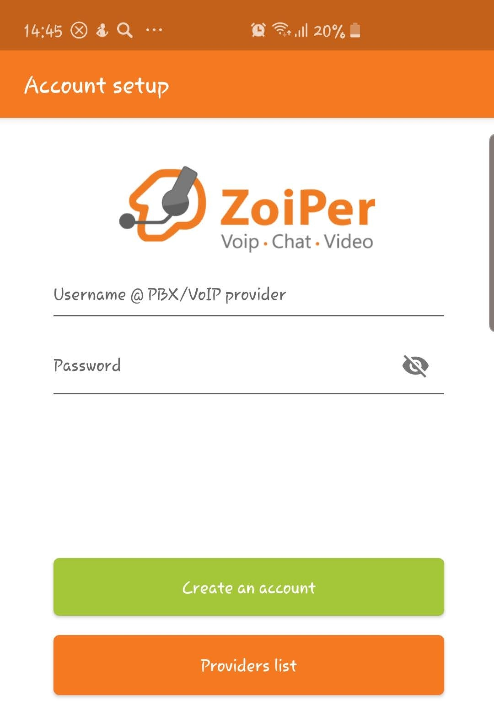 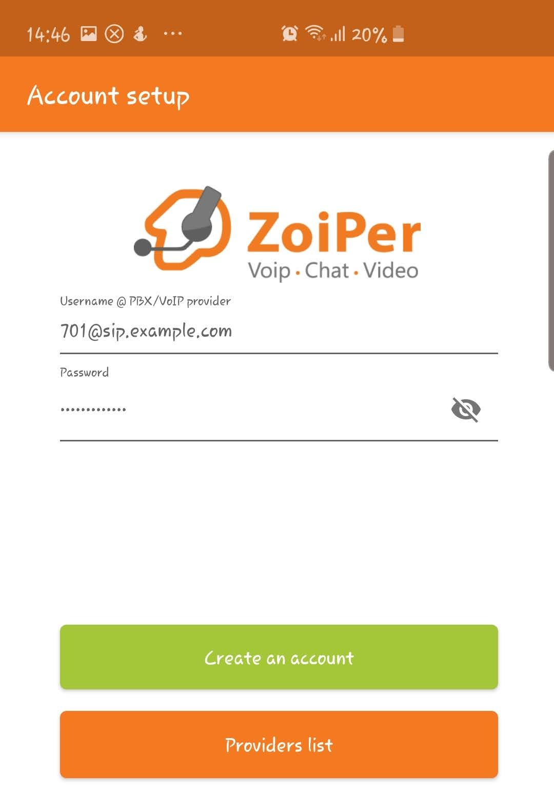{kind=link}
{kind=link}
And press Create account.
At the next screen fill in your hostname (it may be already preset) and press Next.
At the next screen select “My provider/PBX requires an authentication or outbound proxy” checkbox and fill in your username and hostname again. See below an example:
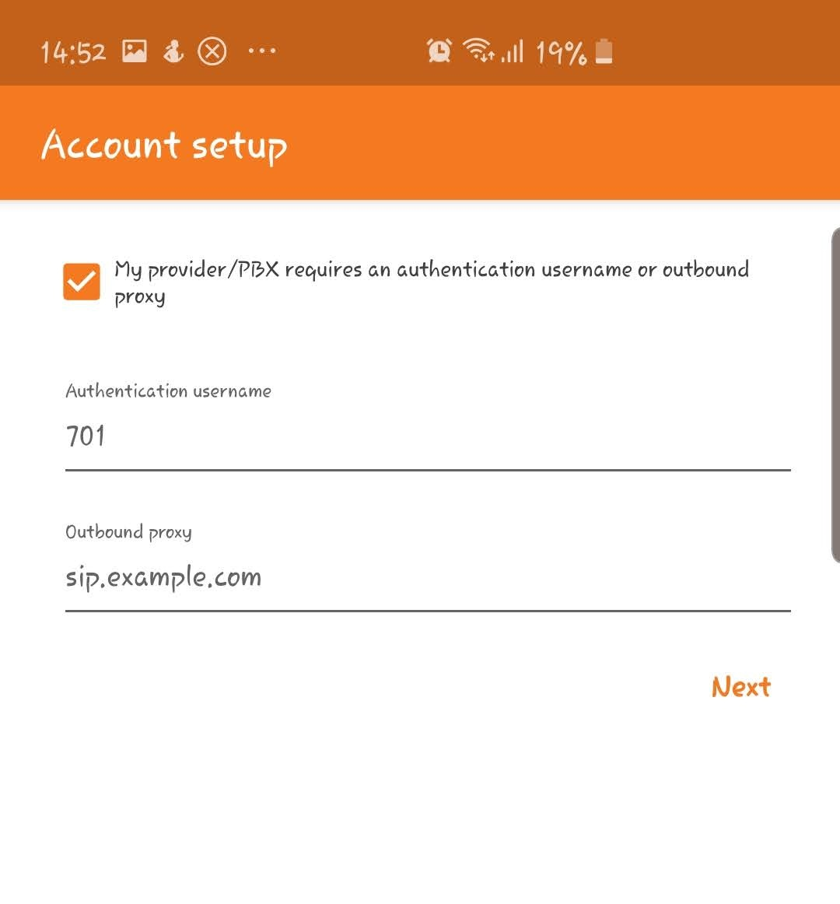{kind=link}
Press Next. Choose available protocol (marked with green color).
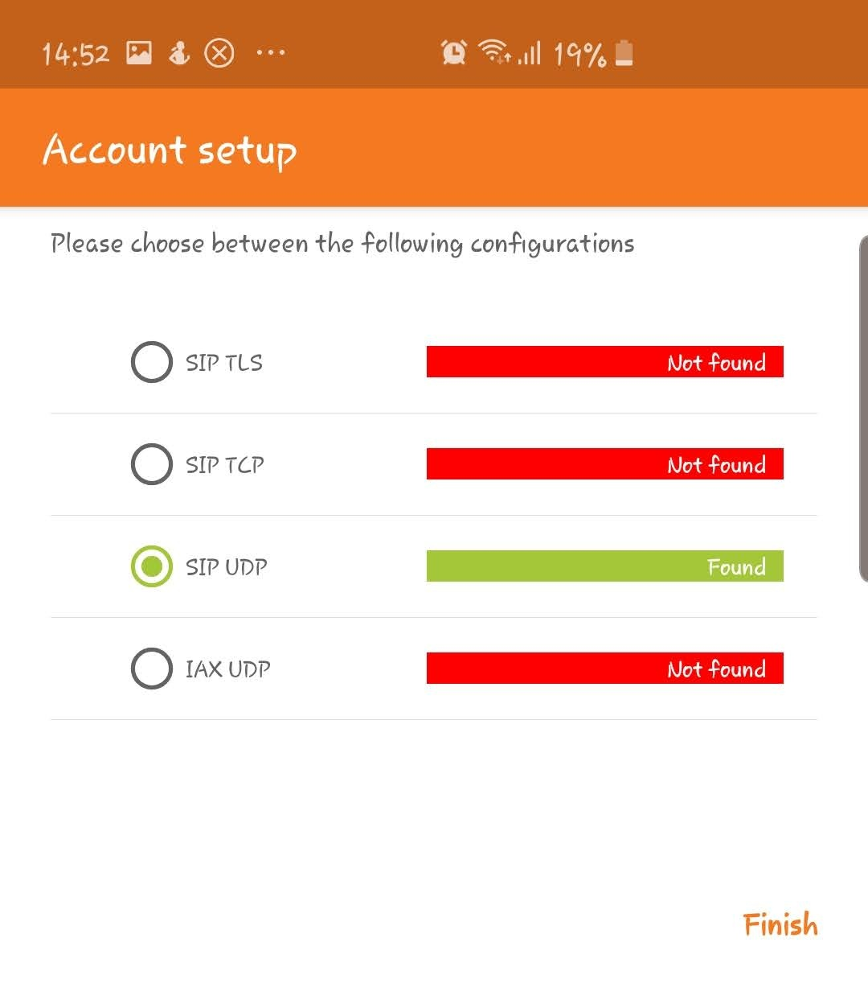{kind=link}
Press Next. Thats all. Now you can dial any number by invoking dialpad from middle-top icon:
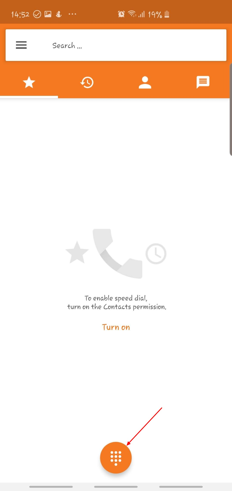{kind=link}
Zoiper Desktop¶
Install Zoiper Desktop. Run it. Choose Continue as a free user.
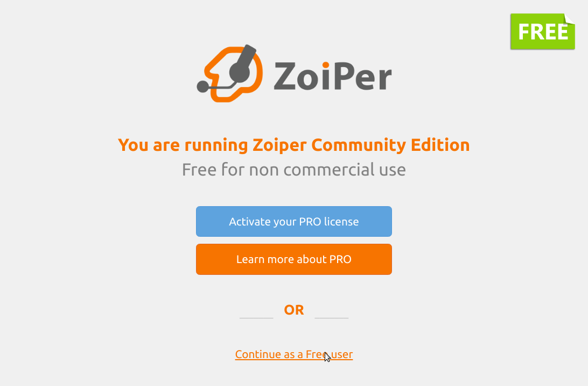Fill in your username@hostname and password. For example:
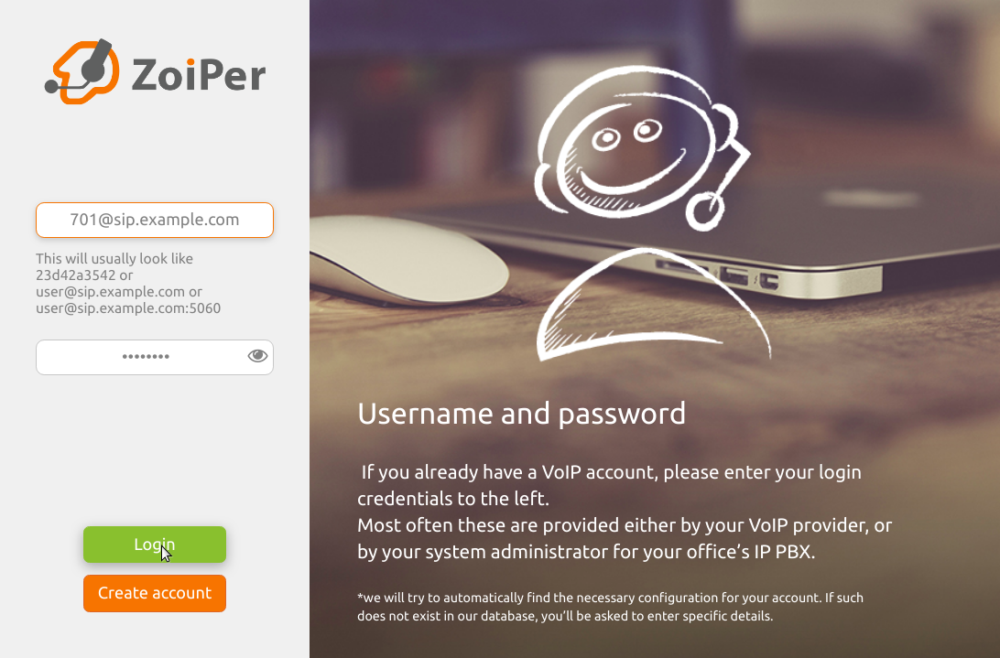At the next screen fill in your hostname (it may be already preset) and press Next.
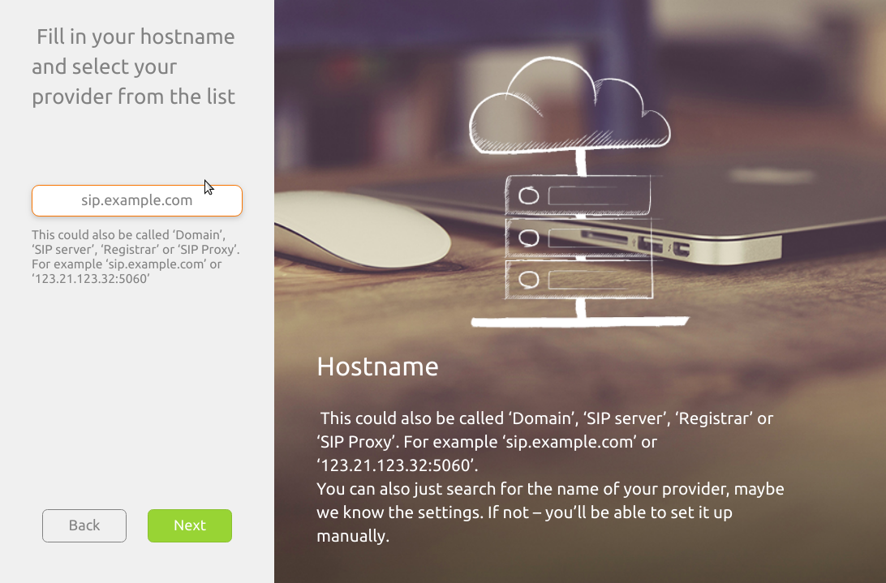At the next screen select Authentication and Outbound proxy checkbox and fill in your username and hostname again. Look how we did:
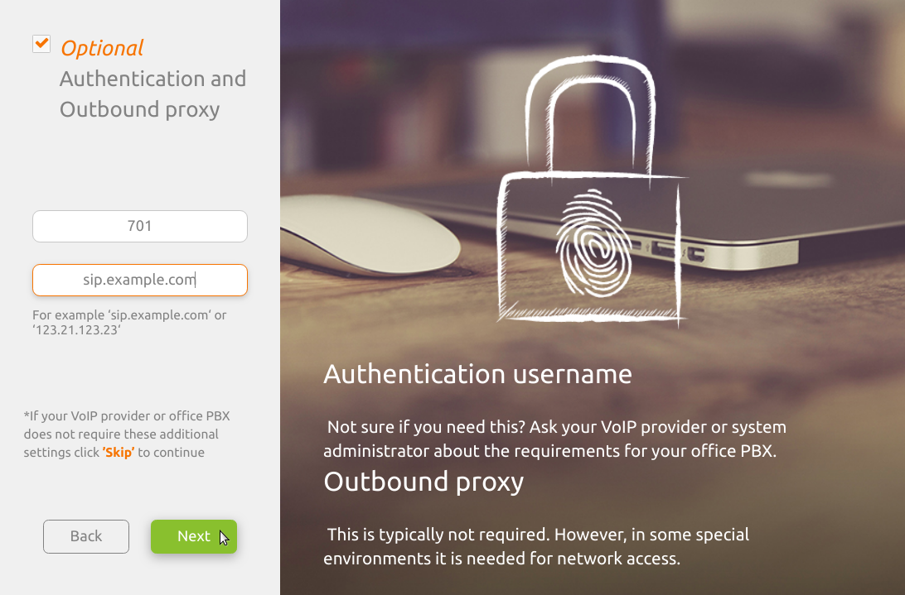Choose available protocol (marked with green color).
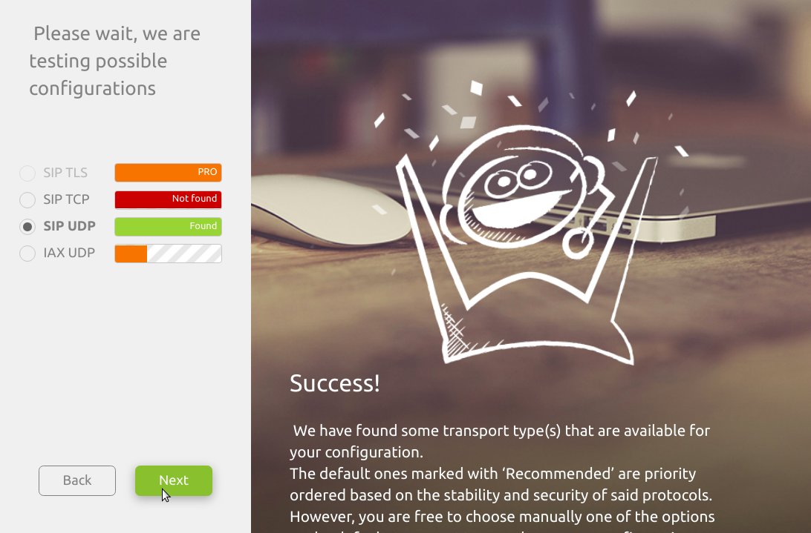That’s it. Now you can enter destination number in search box and press dial button.
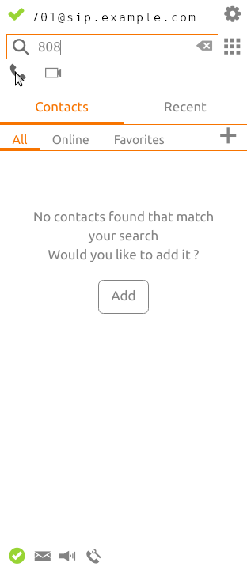Advanced settings¶
After creating a SIP account go to account advanced settings.
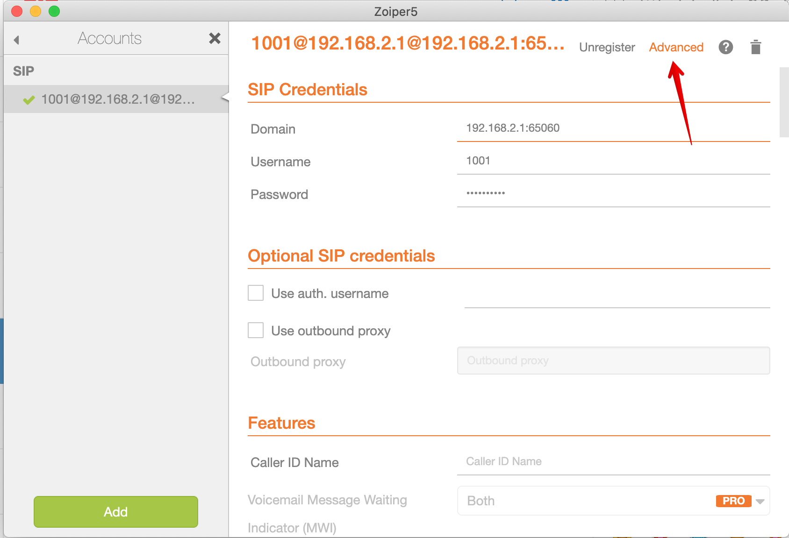Scroll down and find STUN settings and disable it:
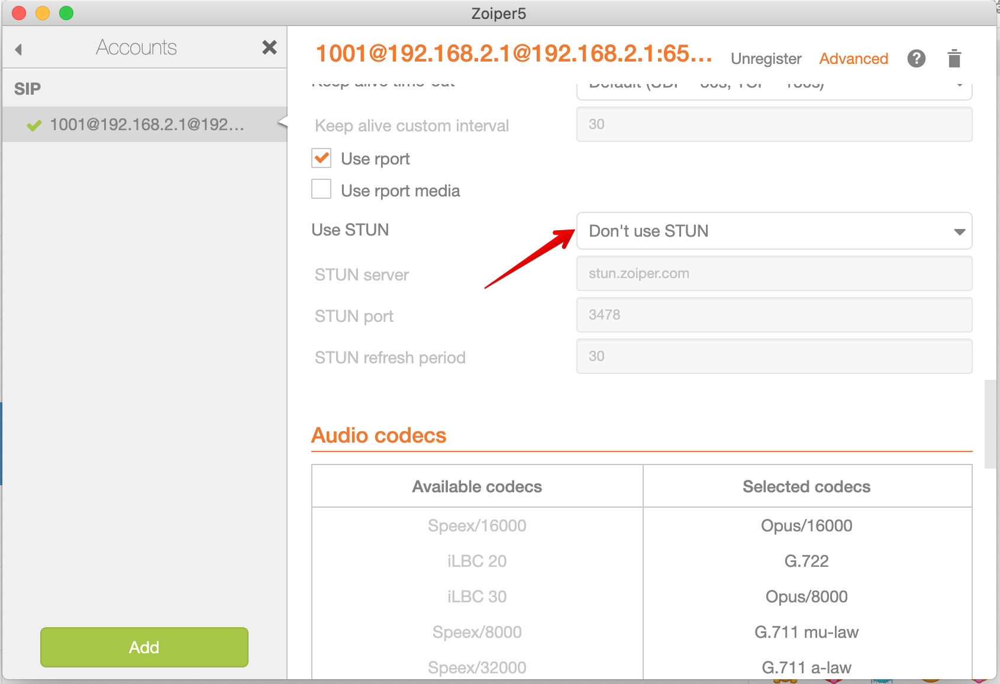